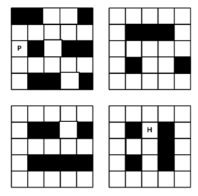
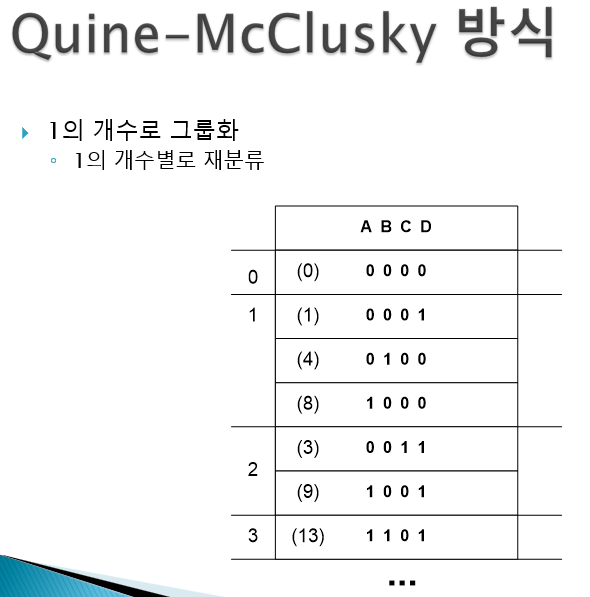

Home
소개
학습기록
과목
프로젝트
과거 프로젝트
현재 프로젝트
미래 프로젝트
성장노트
오늘의 다짐/느낀점
나의 목표
과거 프로젝트
내가 진행했던 주요 프로젝트들을 소개합니다.
각 프로젝트를 클릭하면 자세한 내용을 볼 수 있습니다.

술에 취한 남자 집 가기
술에 취한 남자가 집으로 돌아가는 과정을 구현함.
벽이랑, 스나이프, 와이프 등장.
#c #과제
자세히 보기

퀸맥
Prime implicants를 이용하여 논리식 도출
최종 Essential PI를 통한 논리식 도출
F = A’C’D’+A’B’D+AC’D+B’C’
#c++ #과제
자세히 보기
2025 Level Up 하기